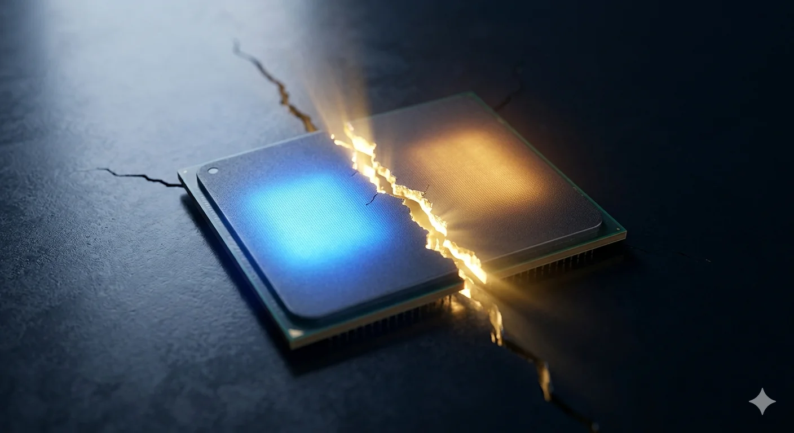
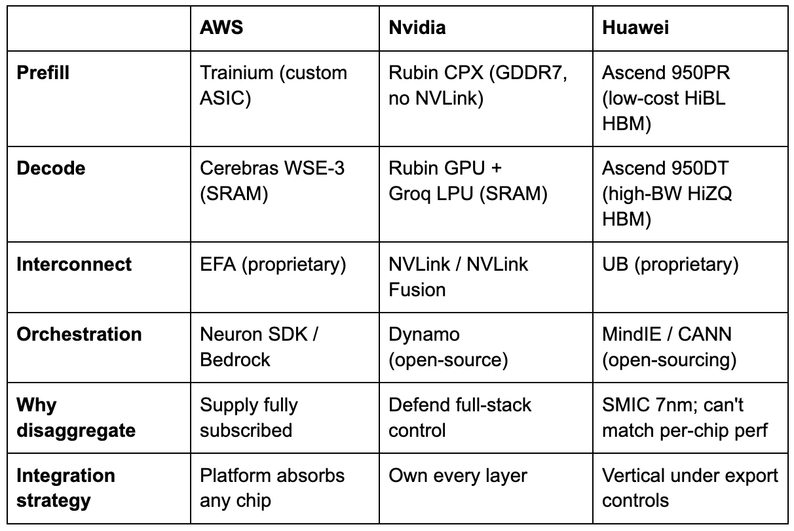
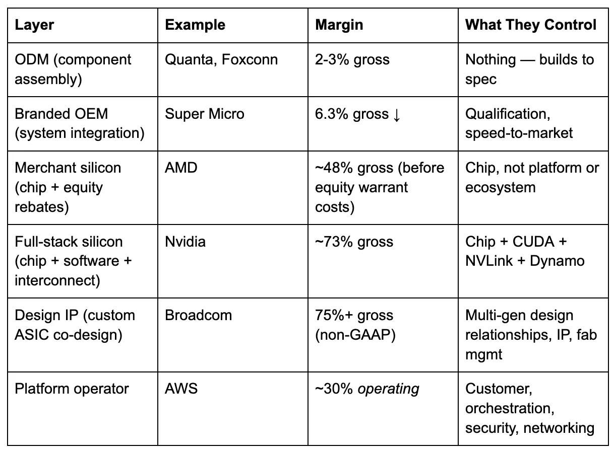

In March 2024, I explained to my YouTube audience how LLM inference actually works.[1] Two distinct phases, I said. Prefill — the phase where the model processes your entire prompt in parallel, filling the key-value cache. And decode — the phase where the model generates its answer one token at a time, reading the full weight matrix from memory for every single output token. Prefill is compute-bound, embarrassingly parallel, the kind of workload GPUs were born for. Decode is memory-bandwidth-bound, stubbornly sequential, the kind of workload that leaves 60-80% of a GPU’s transistors idle. Two phases with opposite hardware requirements, running on the same chip. I called it the fundamental tension of LLM inference.
Two years later, AWS resolved that tension by splitting the workload across two different companies’ chips.
On March 13, 2026, Amazon Web Services announced a partnership with Cerebras Systems to deploy what it calls “disaggregated inference” on Amazon Bedrock.[2] AWS Trainium handles prefill. Cerebras CS-3 systems, built around the wafer-scale WSE-3 processor, handle decode. Amazon’s Elastic Fabric Adapter connects them. The service launches later this year, running open-source models and Amazon Nova. AWS is the first major cloud provider to deploy Cerebras’s disaggregated inference solution inside its own data centers.
The press coverage focused on speed. The structural story is elsewhere. AWS — the cloud provider that has invested more in custom AI silicon than any competitor, through its Annapurna Labs subsidiary — just conceded that its own chip cannot optimally serve the workload that now dominates AI compute. Every GPU running inference today is a compromise: half the silicon is idle half the time, and reasoning models just tripled the bill for the idle half. That compromise is breaking. Three independent ecosystems — American cloud, American silicon, and Chinese silicon — have converged on the same architectural answer. What that answer reveals about where value settles in the AI hardware stack is the subject of the rest of this piece.
The Reasoning Tax
To understand why inference is fracturing, you need to understand its economics and why reasoning models have restructured it.
Every time you prompt a large language model, two computations happen in sequence. First, the model processes your input. Every token in your prompt gets embedded, run through dozens or hundreds of attention layers, and the resulting key-value pairs are stored in a cache. This prefill phase is massively parallel. A modern GPU hits 90-95% utilization during prefill. The hardware is doing exactly what it was designed for: large matrix multiplications across thousands of cores simultaneously.
Then the model starts generating its response, and the physics change entirely. Each output token depends on all previous tokens. The model must read the full weight matrix from memory for every single token it produces — billions of parameters, fetched one token at a time. This decode phase is inherently sequential. GPU utilization drops to 20-40%.[3] The bottleneck is no longer compute. It is memory bandwidth: how fast can the chip read model weights from memory? On an Nvidia H100, the answer is 3.35 terabytes per second of high-bandwidth memory (HBM).[4] For a 70-billion-parameter model, that limits decode throughput to roughly 24 tokens per second at the theoretical ceiling.[5] Most of the chip’s compute units sit idle, waiting for data.
This asymmetry has always existed. What changed is the ratio.
In 2023, a typical chatbot interaction involved a few hundred input tokens and a few hundred output tokens. The prefill and decode workloads were roughly balanced. A monolithic GPU that balanced both phases handled the job adequately. Then, reasoning models arrived. The latest DeepSeek R1 averages 23,000 tokens per question on math benchmarks.[6] Anthropic’s Claude 3.7 Sonnet in thinking mode generates approximately fifteen times more tokens than the standard model across an evaluation suite.[7] Agentic coding workloads produce roughly 15 times as many tokens per query as conversational chat.[8] Barclays estimates that agentic tasks can generate up to twenty-five times more tokens per interaction.[9]
Every one of those additional tokens hits the decode bottleneck.
The cost structure makes the problem visible. Across all major LLM providers in March 2026, output tokens cost four to eight times as much as input tokens, with a median ratio of approximately 5-to-1 for frontier models.[10] Claude Opus 4.6: $5 per million input tokens, $25 per million output. A five-to-one ratio.[11] GPT-5.4: $2.50 input, $15 output. A six-to-one ratio.[12] This pricing asymmetry is not arbitrary. It reflects the hardware asymmetry: decode is physically more expensive because it uses the silicon less efficiently.
Now multiply the pricing asymmetry by the token multiplication. A reasoning model that generates fifteen times more output tokens, at five times the per-token price, produces a total per-request cost roughly twelve times higher than a non-reasoning model processing the same query, even though per-token prices may have dropped 80% year over year.[13] I call this the Reasoning Tax: the structural cost of intelligence that scales with the number of thoughts, not the number of questions. Per-token prices fall. Per-request costs rise. Any business model that assumes inference gets cheaper per request as models improve is exposed.
The Reasoning Tax breaks the monolithic GPU by concentrating costs on the phase the GPU handles worst. When decode accounted for 50% of the workload, a chip that was 40% efficient in decode was an acceptable compromise. When decode becomes 90% of a single request’s compute — which is approximately what a fifteen-times token multiplier implies — that same chip is wasting most of its silicon most of the time. The compromise no longer holds.
What follows is the supply-chain story AWS did not tell, the global convergence that confirms it, and the framework that identifies where margin settles in the era of disaggregated inference.
What AWS actually revealed
The partnership AWS announced on March 13 is unprecedented in its architecture — no hyperscaler has previously split a single inference request across two vendors’ silicon in production — but the engineering logic is direct: Trainium for prefill, Cerebras CS-3 for decode, EFA networking between them, deployed on Bedrock. The engineering logic maps directly to the physics described above. Trainium’s dense compute cores excel at the parallel matrix multiplications of prefill. The Cerebras WSE-3, which stores model weights in 44 gigabytes of on-chip static memory (SRAM) rather than in HBM, delivers orders of magnitude more memory bandwidth than any GPU — eliminating the decode bottleneck entirely.[14] Cerebras has independently demonstrated over 2,100 tokens per second on Llama 70B and 969 tokens per second on Llama 405B, verified by Artificial Analysis.[15] AWS cannot match those decode speeds on Trainium.
The KV cache transfer — the data that must move from the prefill chip to the decode chip between phases — adds roughly 7 milliseconds of overhead, negligible compared to decode latency on conventional GPUs, which stretches to seconds.[16][17] The academic literature confirms the approach: DistServe, published at OSDI 2024, demonstrated up to 7.4 times higher goodput with prefill-decode disaggregation, with KV cache transfer overhead less than a single decode step.[18]
But the technical logic is the obvious reading. The supply-chain logic adds a second, less visible motivation.
AWS’s Trainium allocation is fully committed. Project Rainier — the Anthropic training cluster — deploys roughly 500,000 Trainium2 chips across a 1,200-acre facility in Indiana, with plans to scale to one million.[19] OpenAI’s February 2026 expansion committed approximately 2 gigawatts of Trainium capacity across current- and next-generation chips.[20] SemiAnalysis reported that Trainium2 and Trainium3 are fully subscribed, with assembly yield issues during the Trainium2 ramp causing delays in fab-to-rack shipments.[21] When your two largest customers have collectively committed to consuming every chip you can manufacture for training, and inference demand is doubling annually, partnering with a decode specialist is both sound engineering and supply-chain pragmatism — the technical case and the allocation case reinforce each other.
The naming evolution tells its own story. In 2020, AWS launched two chips with unambiguous names: Inferentia for inference, Trainium for training. By 2024, Trainium2 was repositioned for “training and inference.” By late 2025, no Inferentia3 had been announced; Trainium absorbed both workloads. Then, in March 2026, AWS partnered with Cerebras specifically for decode, the exact workload Inferentia was originally designed to handle. AWS’s own product arc describes a chip that aspired to serve both phases, discovered it could not do both competitively, and outsourced the harder half.[22]
This is what I have previously called the Infrastructure Reversion Test, applied to inference.[23] AWS tried to build the full stack in-house. The intelligence-layer ambition — one chip for everything — hit a physical limitation. The resolution: revert to infrastructure. AWS controls the platform layer — Nitro for security, EFA for networking, Bedrock for abstraction, and Neuron SDK for orchestration — and absorbs third-party components for the capabilities it cannot build.
I call the generalized version the Platform Absorption Test: when a hyperscaler deploys third-party silicon for a core workload, it tells you where its moat is, and where it is not. AWS’s moat is the platform. The chip is a swappable component inside it. (Full disclosure: I spent six years at AWS, where I watched this platform-absorption pattern play out across Graviton, Inferentia, and Trainium — each chip designed to be excellent, each ultimately subordinate to the Nitro/EFA/EC2/Bedrock platform that made it deployable.[51])
Three ecosystems, one architecture
If the AWS-Cerebras deal were an isolated decision, it would be an interesting partnership. It is not isolated. Three independent ecosystems, operating under entirely different constraints, have converged on the same architectural conclusion.
Nvidia saw disaggregation coming and spent aggressively to control it. In December 2025, it struck a deal to absorb Groq’s assets — licensing the startup’s SRAM-based inference IP and hiring roughly 90 percent of its staff for approximately $20 billion, while Groq continued operating independently under new leadership.[24] Jensen Huang was explicit about the logic: Groq’s low-latency inference processors would be integrated into Nvidia’s AI factory architecture.[25] Rather than let an SRAM-based decode specialist become a platform for competitors, Nvidia absorbed its capabilities. Three months earlier, Nvidia had announced Rubin CPX: a dedicated prefill GPU — expected to ship in late 2026 — with 30 petaflops in NVFP4 and GDDR7 memory instead of HBM — approximately five times cheaper per gigabyte — explicitly designed to pair with standard Rubin GPUs for decode.[26] Two specialized chips from one vendor, connected by NVLink, orchestrated by Dynamo, Nvidia’s open-source disaggregated serving framework.[27] Jensen is not defending the GPU. He is building the system that replaces it.
The most revealing convergence comes from China. At Huawei Connect in September 2025, rotating chairman Eric Xu unveiled the Ascend 950 — not one chip, but two. The Ascend 950PR, optimized for prefill and recommendation workloads, ships in the first quarter of 2026 with HiBL 1.0, Huawei’s proprietary low-cost HBM. The Ascend 950DT, optimized for decode and training, ships in the fourth quarter of 2026 with HiZQ 2.0 HBM — 144 gigabytes at four terabytes per second of bandwidth.[28] Same die. Two memory configurations. Two products, explicitly named for the two phases of inference. Xu’s explanation was precise: prefill is compute-intensive and has lower memory-bandwidth demand, so it does not require expensive high-bandwidth memory. Decode requires fast memory access. Build each product for what it actually needs.[29]
Huawei went further. Its CloudMatrix-Infer system disaggregates inference into three independent subsystems — prefill, decode, and caching — operating as peer-to-peer resource pools connected by high-bandwidth interconnect.[30] The third subsystem is the key innovation: rather than each decode worker managing its own KV cache locally, CloudMatrix pools the cache into a shared disaggregated memory layer that all prefill and decode workers access uniformly. This decouples request scheduling from data locality — a limitation that constrains every other disaggregated system. In the AWS-Cerebras architecture, for instance, the KV cache must transfer point-to-point from the specific Trainium instance that computed it to the specific Cerebras chip that will decode from it. Huawei’s approach eliminates that coupling entirely, at the cost of requiring interconnect bandwidth sufficient to serve the cache to any worker in the cluster.
The Atlas 950 SuperPod, scheduled for late 2026, deploys 8,192 Ascend chips with an aggregate interconnect bandwidth of 16 petabytes per second.[30] This is not software disaggregation on identical GPUs. This is an entire inference architecture designed from first principles, based on the observation that prefill, decode, and memory are three distinct problems that require distinct optimizations.
Huawei arrived at disaggregation because it had no choice. Constrained to a domestic 7-nanometer process while Nvidia builds on TSMC 3nm, Huawei cannot compete on raw transistor performance.[31] When you cannot shrink the die, you specialize the system. Export controls made disaggregation mandatory, not optional. But the architecture works regardless of motivation — and the fact that Nvidia, unconstrained and dominant, arrived at the same answer from the opposite direction confirms it.
AMD occupies the middle ground. Its MI350X and MI355X ship with software-level disaggregation support: separate GPU pools for prefill and decode, with AMD’s MoRI interface handling KV cache transfer over RDMA.[32] But AMD uses the same chip on both sides. The disaggregation is in scheduling, not in silicon. This is technically sound and delivers real gains, but it does not capture the architectural advantage of phase-specific hardware. The tradeoff is operational simplicity: one chip, one vendor, one support contract — advantages that matter to enterprise customers who lack the engineering depth to manage multi-vendor silicon in a single inference request. AMD’s strategic play is elsewhere: it acquired ZT Systems, a server ODM, to move from chip vendor to systems integrator, and its Meta 6GW deal and OpenAI partnership both come with equity rebates — AMD shares exchanged for GPU volume.[33] AMD’s explicit bet is that equity-for-volume buys enough installed base for ROCm to become a second software ecosystem. If it works, AMD escapes commoditization. If it doesn’t, giving away equity to win deals is the behavior of a component vendor losing pricing power.
Google bets against the thesis entirely. Its TPU v7 Ironwood is homogeneous: 4,614 teraflops per chip, 192 gigabytes of HBM3e, 7.4 terabytes per second of bandwidth, deployed in 9,216-chip pods.[34] Google’s position is that if you build enough bandwidth into a single chip and scale aggressively, disaggregation is unnecessary. Google compensates with aggressive software optimization — prefix caching, continuous batching, and XLA compiler fusion — that reduces decode waste without hardware specialization. This is the strongest counterargument to the piece’s thesis, and it may prove correct for Google’s specific integration of hardware, compiler (XLA), and workloads. But Google is the only major hyperscaler not publicly pursuing some form of disaggregation, which either makes it the smartest player in the room or the one most likely to be disrupted when the architecture shifts.
Three constraints, one architecture

Disaggregation serves the highest-value inference workloads — reasoning, agentic coding, long-context processing — that are also the fastest-growing segment of inference demand. The monolithic GPU has been declared obsolete before — by Graphcore, Habana, and Cerebras in its own early training pitch — and has survived every challenge. What distinguishes disaggregation is that it is not a competing chip. It is the incumbents themselves — Nvidia, AWS, Huawei — restructuring around the same physics. The monolithic GPU does not disappear. It becomes the commodity tier, handling short-context conversational queries at volume. But the premium tier, where margins are highest and competition is fiercest, is disaggregating. And in that tier, the question shifts from which chip is fastest to who owns the system.
Systems eat chips
The convergence tells you disaggregation is happening. The next question is who benefits.
The GPU era had a simple value chain. Nvidia designed the chip, TSMC fabricated it, server OEMs racked it, and cloud providers sold it. Nvidia captured the largest margin because it controlled the entire stack from silicon to CUDA. The disaggregated era is more complex — and the complexity reshuffles who captures value.
Start at the bottom of the stack. Original design manufacturers — Quanta, Foxconn, Wistron — build servers from components. Their margins sit at two to three percent.[35] One step up, branded OEMs like Super Micro integrate and qualify systems. Super Micro’s gross margin in its most recent quarter was 6.3 percent, down from 15.4 percent in late 2023, and still falling as competition intensifies.[36] Building racks from someone else’s chips is not a moat. It is a commodity assembly.
Now consider the other end. AWS operates at roughly a 30 percent operating margin.[37] Nvidia operates at roughly 73 percent gross margin.[38] Broadcom — which designs Google’s TPUs, Meta’s MTIA accelerator, and Anthropic’s custom chips, among others — operates at non-GAAP gross margins above 75 percent.[39] The margin gradient from ODM to OEM to chip vendor to platform operator is not random. It maps to control: whoever owns the layer that makes the adjacent layers interchangeable captures the most value.
Where the margin sits in a disaggregated stack(gross margin unless noted)

AWS reports operating margin, not gross; its gross margin is estimated at 60-65 percent, comparable to Nvidia’s. The operating figure is used because AWS does not disclose segment-level cost of goods sold, and because operating margin — which includes the cost of running the platform — is the more conservative measure of what the platform layer captures.
In the monolithic GPU era, that layer was the chip plus its software ecosystem. CUDA made every Nvidia GPU interchangeable from a developer’s perspective, and no competing chip could replicate the ecosystem. Nvidia controlled the interchangeability layer, and the margin followed.
Disaggregation changes which layer provides interchangeability. Once inference is a system — prefill chip, decode chip, interconnect fabric, orchestration software, platform abstraction — the value migrates to whoever assembles and orchestrates the components. I call this the Integration Premium: in any disaggregating hardware stack, margin migrates from component manufacturers to the integration layer. For any AI hardware investment, the first question is where the company sits in this hierarchy — and whether it has a credible path to the tier above.
The historical parallel is instructive, if imperfect. In the PC era, Intel’s x86 architecture was dominant, but the integration margin went first to Dell and HP (who assembled the systems) and then to AWS and Azure (who absorbed the systems into cloud platforms). Intel’s share of the value chain declined as the layers above it became the control point. The AI inference stack is not identical — Nvidia’s CUDA ecosystem is stickier than x86 was, and the hardware cycle is compressing faster — but the underlying force is the same. When hardware is disaggregated into components, the components lose pricing power to the assembler.
Three tiers are emerging. Platform operators — AWS, Google, Azure — absorb any silicon into managed services and control the customer relationship. They do not need to build the best chip. They need to make any chip deployable. Design IP providers — principally Broadcom and, to a lesser extent, Marvell — translate hyperscaler architectures into manufacturable silicon. Broadcom has designed chips for Google, Meta, ByteDance, and Anthropic, with a separate co-development partnership with OpenAI and at least one additional unannounced customer, representing an AI backlog exceeding $73 billion.[40] Its margins are the highest in the chain because it sells design expertise, IP blocks, and fab management — not finished products.
Could Broadcom build its own merchant inference ASIC — an application-specific integrated circuit, purpose-built for a single workload — and sell it directly? It has every technical ingredient: seven generations of TPU co-design, TSMC fab relationships, packaging expertise, and intimate knowledge of what prefill-optimized and decode-optimized silicon requires. The answer is structural, not technical. Google did not invest seven generations of TPU co-design so that Broadcom could sell a TPU-equivalent to Azure. Meta did not pay for custom MTIA silicon so that a merchant version could be released to the open market. A Broadcom merchant chip would commoditize every custom design its hyperscaler customers paid to differentiate — destroying the franchise that generates 75-plus percent margins. Broadcom’s CEO has explicitly framed the stickiness: the value of custom accelerators comes from the learning curve in co-design with each hyperscaler, creating multi-generational relationships that deepen over time.[41]
Disaggregation does not push Broadcom toward merchant silicon. It multiplies its design revenue. Every hyperscaler that disaggregates inference now needs two custom chip designs instead of one — a prefill-optimized ASIC and a decode-optimized ASIC, each with different memory hierarchies, precision formats, and interconnect requirements. Huawei built both variants from a single die. Hyperscalers working with Broadcom may do the same, or may commission fully distinct designs. Either way, the design IP revenue per customer expands. This is why total ASIC shipments from Google and AWS alone reached 40-60 percent of Nvidia GPU shipments by 2025, and are projected to surpass Nvidia’s total GPU shipments by late 2026.[52]
The third tier is merchant silicon: Nvidia, AMD, Cerebras, and every other company selling chips into someone else’s platform. Nvidia’s position is unique because Jensen Huang is attempting to occupy all three tiers simultaneously. Rubin CPX and the Groq deal give him both specialized chips. NVLink Fusion — which allows third-party accelerators, including Trainium and TPUs, to plug into Nvidia’s interconnect fabric — positions Nvidia as the integration standard.[42] Dynamo gives him the orchestration software. If Jensen succeeds, Nvidia captures the Integration Premium on top of its chip margins. If third parties control the integration layer instead — if Bedrock and EFA become the standard, not NVLink and Dynamo — Nvidia’s 73 percent margins face the same competitive pressure that eventually compressed Intel’s.
Component vendor at $23 billion
The Cerebras IPO, expected as soon as April 2026, is the most direct test of whether a decode-specialist chip vendor can sustain premium margins without controlling the platform.
The company’s financial trajectory has been steep. Revenue climbed from $24.6 million in 2022 to $78.7 million in 2023.[43] The first half of 2024 reached an estimated $136.4 million — a 14-fold year-over-year increase — though the original S-1 revealed that G42, the UAE-based technology group, accounted for 87 percent of that revenue.[44] The company has never been profitable, posting a $66.6 million net loss in the first half of 2024, though gross margins improved from 11.7 percent to approximately 41 percent over the same period.[45]
The IPO narrative was reconstructed in three moves. In January 2026, OpenAI signed a deal worth over $10 billion for 750 megawatts of Cerebras compute through 2028.[46] In February, Cerebras raised a $1 billion Series H at approximately $23 billion — nearly tripling the $8.1 billion Series G valuation from five months earlier.[47] In March, the AWS partnership was announced during the active Morgan Stanley-led roadshow.[48] Each move addressed a specific S-1 vulnerability: OpenAI reduced customer concentration, the Series H established a valuation floor, and AWS provided validation of hyperscaler technology.
The valuation demands scrutiny. At $23 billion against approximately $270 million in the most recent publicly disclosed annualized revenue — now eighteen months stale — the nominal multiple is 85 times trailing revenue. Against the most optimistic industry estimate that 2026 revenue may approach $1 billion, the forward multiple is 23 times, still rich for a hardware company with gross margins in the mid-thirties to low forties.[49] Nvidia’s gross margins exceed 73 percent. AMD’s are in the high forties. Hardware margins in the thirties reflect the structural economics of wafer-scale manufacturing on TSMC 5nm — a sole-source fabrication dependency shared with every leading-edge fabless company, but with no chiplet or binning fallback; a single yield defect scraps the entire wafer, not just one chiplet — not the software-like scalability that justifies technology multiples.
Apply the Commitment vs. Spend Gap. The OpenAI deal is worth over $10 billion — but over how many years, at what delivery schedule, and under what contract structure? Whether the agreement is take-or-pay or consumption-based is the single most important undisclosed variable for the updated S-1. A take-or-pay contract provides revenue predictability. A consumption-based agreement means revenue depends on OpenAI’s actual inference volumes, which are a function of model architecture decisions, competitive dynamics, and customer demand that Cerebras does not control. The AWS partnership is even less specific: “collaboration” and “coming months,” with deployment “based on customer demand.”[50] Commitments are not revenue. Press releases are not purchase orders.
The Integration Premium framework suggests Cerebras faces structural headwinds as a public company. Its technology is real — the decode speed advantage is verified and architecturally durable. But Cerebras operates as a component vendor inside other companies’ platforms. AWS controls the Bedrock relationship. OpenAI controls the model architecture. The chip is exceptional. The margin structure may not be, because the platform owner, not the component vendor, sets the terms.
Where value settles
The Reasoning Tax is not a temporary condition. As models become more capable, they reason more, generating more tokens per request. The cost of that reasoning concentrates on decode — the phase that scales worst on conventional hardware. Any financial model that projects inference costs declining per request, rather than per token, needs stress-testing against reasoning workloads. The metric that matters is shifting from peak FLOPS to tokens per second per dollar per watt on decode-heavy workloads.
The Integration Premium identifies where the margin settles. In a disaggregated stack, the durable margin sits with whoever makes the components interchangeable: the platform operator that abstracts away the silicon, the design IP provider that translates architectures into manufacturable chips, or the full-stack vendor that controls the entire system from silicon to software. Pure-play chip companies — selling merchant silicon into someone else’s platform — face the same margin compression that server OEMs already experience, unless they control a layer above the chip.
A caveat on timeline: Nvidia may sustain full-stack margins for years before these forces take hold. Intel held its dominant position for two decades before cloud platforms displaced it. CUDA’s ecosystem lock-in is real and deep. Jensen’s strongest counter is that NVLink Fusion and Dynamo position Nvidia as the integration standard even in a disaggregated world — if AWS routes Trainium-to-Cerebras traffic through Nvidia fabric rather than EFA, Jensen’s bet pays off. Current evidence points in the other direction: every hyperscaler is building a proprietary interconnect.
The question for every AI hardware investment is no longer “which chip is fastest?” The chip is becoming a component. The question is: who owns the system?
The GPU did not die. It disaggregated. And when the hardware splits, the value migrates to whoever holds it together.
Notes
[1] “Deep Dive: Optimizing LLM Inference,” Julien Simon, YouTube, March 11, 2024. The video covers KV cache mechanics, continuous batching, and speculative decoding for decoder-only architectures.
[2] “AWS and Cerebras Collaboration Aims to Set a New Standard for AI Inference Speed and Performance in the Cloud,” AWS Press Release, March 13, 2026.
[3]DistServe: Disaggregating Prefill and Decoding for Goodput-optimized Large Language Model Serving, Zhong et al., OSDI 2024. Roofline model analysis characterizes prefill arithmetic intensity at 200-400 FLOPs/byte (compute-bound) and decode at 0.5-8 FLOPs/byte (memory-bandwidth-bound).
[4]Nvidia H100 Tensor Core GPU Datasheet. HBM3 bandwidth: 3.35 TB/s.
[5] Author’s calculation. Llama 70B at FP16 requires ~140 GB of weight reads per decode step. At 3.35 TB/s theoretical bandwidth and ~70% practical efficiency, throughput is approximately (3.35 × 0.7 × 10^12) / (140 × 10^9) ≈ 16.75 tokens/sec, rising to ~24 tok/s with FP8 quantization halving the weight size. Theoretical ceiling; real-world throughput varies with batch size, sequence length, and serving framework.
[6]DeepSeek R1-0528 model card(Hugging Face, May 2025): “the new version averages 23K tokens per question” on the AIME math benchmark. The original R1 (January 2025) averaged approximately 12K tokens on the same benchmark. The 23K figure represents the latest model revision on a reasoning-intensive evaluation; general conversational usage produces fewer tokens.
[7]Artificial Analysis, token consumption measurements across evaluation suite, comparing Claude 3.7 Sonnet standard vs. Claude 3.7 Sonnet Thinking with 64K token budget. Approximately 15x multiplier.
[8] “Cerebras is coming to AWS,” Cerebras blog, March 13, 2026: “Unlike conversational chat, agentic coding generates approximately 15x more tokens per query.” Vendor-published claim.
[9] Barclays analyst estimate for agentic task token multiplication. B-tier source; presented as analyst estimate.
[10] “Understanding LLM Cost Per Token: A 2026 Practical Guide,” Silicon Data, 2026: “the median output-to-input price ratio is around 4×” across all providers, including budget models. Frontier models (Opus 4.6, GPT-5.4, Gemini 2.5 Pro) cluster at 5-8x. Range from approximately 2.5x (budget tiers) to 8x (GPT-5, Gemini 2.5 Pro).
[11]Anthropic official API pricing, March 2026. Claude Opus 4.6: $5/MTok input, $25/MTok output.
[12]OpenAI official API pricing, March 2026. GPT-5.4: $2.50/MTok input, $15/MTok output.
[13] Author’s calculation. Baseline non-reasoning request: 500 input tokens at price P, 500 output tokens at 5P. Total cost = 500P + 2,500P = 3,000P. Reasoning request (15x output multiplier): 500 input tokens at P, 7,500 output tokens at 5P. Total cost = 500P + 37,500P = 38,000P. Ratio: 38,000 / 3,000 ≈ 12.7x. Range of 10-15x, depending on input/output ratio assumptions and the specific provider's pricing. The output component alone is 75x higher (15 × 5), but the total request cost, including unchanged input tokens, is approximately 12-13x. YoY per-token price declines of ~80% (TLDL.io pricing analysis, March 2026) offset partially: 0.2 × 12.7 ≈ 2.5x the prior year’s per-request cost at 2026 token prices.
[14] The WSE-3 contains 900,000 cores and 44 GB of on-chip SRAM, delivering internal memory bandwidth orders of magnitude higher than that of HBM-based architectures.SiliconANGLE(March 13, 2026) reports 27 PB/s;Cerebras blogstates “thousands of times greater memory bandwidth than the fastest GPU.” The exact figure is vendor-published; no independent verification. The 44 GB SRAM capacity means that models with more than approximately 70B parameters (at reduced precision) require weight streaming from external DRAM, reintroducing bandwidth constraints. Cerebras’s benchmarked speeds on 70B and 405B models reflect its weight-streaming architecture combined with on-chip SRAM caching.
[15]Artificial Analysisindependent benchmarks. Cerebras-published; verified by third-party benchmarking service.
[16] Author’s calculation. Llama 405B with Grouped Query Attention: 8 KV heads, 126 layers, 128 head dimension, BF16 precision. Per-token KV cache ≈ 8 × 126 × 128 × 2 × 2 = ~0.49 MB. At 4,096 tokens: ~2.01 GB. AWS EFA provides 400 GB/s (3.2 Tbps) per Trn2 instance. At ~70% practical efficiency: ~2.01 GB / 280 GB/s ≈ 7.2 ms. Consistent with KV cache calculations in JarvisLabs technical documentation (January 2026) for comparable architectures.
[17]AWS EFA specificationsfor Trn2 instances: 3.2 Tbps (400 GB/s).
[18]DistServe, Zhong et al., OSDI 2024. Demonstrated 7.4x goodput improvement and 12.6x stricter SLO compliance vs. colocated serving. KV cache transfer overhead is characterized as “less than the time of a single decoding step.”
[19] “AWS activates Project Rainier: One of the world’s largest AI compute clusters,” About Amazon, October 2025. Nearly 500,000 Trainium2 chips across 30 data centers on a 1,200-acre Indiana site. Anthropic target of scaling to ~1 million chips per Introl (February 2026).
[20] AWS-OpenAI partnership expansion, February 2026. OpenAI is committed to consuming approximately 2 gigawatts of Trainium capacity through AWS infrastructure, per AWS press release andDCD reporting.
[21] AWS CEO Andy Jassy, Q3 2025 earnings call (perYahoo Finance transcript, October 30, 2025): stated that Trainium2 is “fully subscribed” and “now a multi-billion-dollar business growing 150% quarter-over-quarter.” SemiAnalysis, “Amazon’s AI Resurgence,” September 2025: “Trainium has faced some yield issues on the assembly phase — fairly standard for a new system.” SemiAnalysis, “AWS Trainium3 Deep Dive,” December 2025, confirmed strong customer demand across Trn2 and Trn3.
[22] AWS product history: Inferentia1 launched in 2019, Inferentia2 launched in 2023, Trainium1 launched in 2022, Trainium2 launched in 2024 (repositioned for “training and inference”), Trainium3 launched in December 2025. No Inferentia3 has been announced as of March 2026. Per Introl (February 2026): “AWS appears focused on Trainium improvements that benefit both training and inference rather than maintaining separate chip lines.” See alsoNikkei Asia(December 2024) on Inferentia development halt.
[23] The Infrastructure Reversion Test was introduced in “Chip and Mortar,” The AI Realist, analyzing Amazon’s pattern of reverting to infrastructure when intelligence-layer bets underperform.
[24] “Nvidia buying AI chip startup Groq’s assets for about $20 billion in its largest deal on record,” CNBC, December 24, 2025. Structured as a non-exclusive IP licensing agreement plus acqui-hire of approximately 90% of Groq staff. Groq continues operating independently under new leadership. Jensen Huang internal email (obtained by CNBC): “We are not acquiring Groq as a company.” The ~$20B figure is from investor sources, not officially confirmed by Nvidia.
[25] Jensen Huang's internal email to Nvidia employees, December 2025, obtained byCNBC. Described Groq’s “low-latency processors” and integrating them into “the NVIDIA AI factory architecture.” The exact phrase “extreme low latency” appeared in CES 2026 press Q&A commentary about the deal rationale.
[26]Nvidia Rubin CPX announcement, September 2025. 30 PFLOPS NVFP4, 128 GB GDDR7 (no HBM), no NVLink. Designed for prefill in disaggregated configurations. NVIDIA Developer Technical Blog, “NVIDIA Rubin CPX Accelerates Inference Performance and Efficiency for 1M+ Token Context Workloads.”
[27]Nvidia Dynamo, announced GTC 2025. Open-source distributed inference framework with first-class prefill and decode workers connected by KV-aware routing.GitHub.
[28] Huawei Connect 2025 keynote, Eric Xu, September 18, 2025. Ascend 950PR (prefill/recommendation, HiBL 1.0, Q1 2026) and Ascend 950DT (decode/training, HiZQ 2.0, 144 GB, 4 TB/s, Q4 2026). PerChinaBiz Insider(September 2025) and South China Morning Post (September 20, 2025).
[29] Eric Xu keynote,Huawei Connect 2025: “Both the prefill stage of inference and recommendation algorithms are compute-intensive, with higher demand for parallel computing and lower demand for memory access bandwidth. A layered memory solution also means that prefill and recommendation algorithms don’t necessarily need huge amounts of local memory.”
[30] “Serving Large Language Models on Huawei CloudMatrix384,” Huawei research paper (arxiv, June 2025). Three-subsystem architecture: prefill, decode, and caching as peer-to-peer resource pools. Zhang Dixuan, President of Ascend Computing, Huawei Connect 2025: disaggregation of Attention and FFN stages improved decode throughput by over 50%.
[31] Huawei’s Ascend chips are believed to be manufactured primarily by SMIC, based on teardown analysis (TechInsights,SemiAnalysis) and supply chain reporting; Huawei has not officially confirmed its foundry partner. Earlier Ascend 910B/910C variants were found to contain TSMC dies obtained through intermediaries, for which TSMC was fined. U.S. export controls bar Huawei from TSMC’s advanced nodes. SMIC’s most advanced production process is an enhanced 7nm node; competitors (Nvidia, AMD, AWS) build on TSMC 3nm.
[32] AMD ROCm blog, “Unleashing AMD Instinct MI300X GPUs for LLM Serving: Disaggregating Prefill & Decode with SGLang,” August 28, 2025. AMD, “Speed is the Moat: Inference Performance on AMD GPUs,” February 2026, describing MoRI (GitHub) for KV transfer and adaptive kernel selection.
[33]Meta-AMD 6GW partnership, February 2026: Meta is entitled to up to 160 million AMD shares depending on GPU volume purchased. Per Techzine Global (February 2026). SemiAnalysis previously noted OpenAI receives an “equity rebate” to own up to 10% of AMD shares. AMD's acquisition of ZT Systems supports the delivery of rack-scale solutions, per Lisa Su (March 2026 earnings call). Note: AMD’s reported GAAP gross margin (~48%) does not reflect the economic cost of performance-based warrants issued to Meta and equity rebates to OpenAI, which dilute shareholder value below the gross margin line. The effective margin per GPU on warranted deals is substantially lower.
[34] Google Cloud Next 2025. TPU v7 Ironwood: 4,614 TFLOPS per chip, 192 GB HBM3e, 7.4 TB/s bandwidth perGoogle’s official blog(”Ironwood: The first Google TPU for the age of inference”). 9,216-chip pods. Committed pricing reported at $0.39/chip-hour; pricing may vary by commitment tier and region.
[35] SemiAnalysis, “How Dell Is Beating Supermicro,” May 2024: “Hyperscalers tend to buy from ODMs who make ~2% to ~3% margins from building servers.”
[36]Super Micro Computer 10-Q, Q2 FY2026(Oct–Dec 2025): GAAP gross margin 6.3%. Comparison:Q2 FY2024(Oct–Dec 2023) GAAP gross margin was 15.4%. The 15.6% figure sometimes cited reflects non-GAAP for a different quarter (Q3 FY2024).
[37]Amazon 10-K FY2025. AWS segment operating income divided by AWS revenue. Approximate; varies quarterly.
[38]Nvidia Q3 FY2026 earnings release(November 2025): GAAP gross margin 73.4%.Q1 FY2026showed 60.5% due to a one-time $4.5B H20 inventory charge related to China export controls; excluding this charge, the underlying margin was 71.3%. The ~73% figure reflects normalized operations.
[39]Broadcom Q1 FY2026 earnings. Non-GAAP gross margins above 75%; AI revenue $8.4 billion, up 106% YoY. $73 billion AI backlog per Broadcom FQ4 2025 earnings call. XPU design customers include Google (TPU), Meta (MTIA), ByteDance, andAnthropic(~$11 billion order, revealed as the fourth customer at Q4 FY2025 earnings per CNBC, December 2025). OpenAI has a separate 10GW chip co-development partnership (announced October 2025) that is structurally distinct from Broadcom’s XPU design relationships.
[40] See note 39.
[41] Structural assessment, not Broadcom statement. Broadcom CEO Hock Tan, perNext Platform(June 2025), has stated that the value of custom accelerators lies in the learning curve of co-design with each hyperscaler, creating multi-generational stickiness. A merchant product would commoditize this relationship.
[42]Nvidia NVLink Fusion, announced at Computex 2025. Allows third-party accelerators (hyperscaler custom chips, including Trainium and TPUs) to connect to NVLink fabric. Per NVIDIA Developer Technical Blog: “Scaling AI Inference Performance and Flexibility with NVIDIA NVLink and NVLink Fusion.”
[43]Cerebras Systems S-1 filing, SEC, September 30, 2024. Revenue: $24.6M (FY2022), $78.7M (FY2023).
[44] Cerebras S-1: H1 2024 revenue approximately $136.4M. G42 represented 87% of H1 2024 revenue. PerSherwood News: “Is it bad to rely on one customer for 87% of your revenue?”
[45]Cerebras S-1. H1 2024 net loss $66.6M. Gross margin progression: 11.7% (2022) to approximately 41% (H1 2024).
[46] “Cerebras scores OpenAI deal worth over $10 billion ahead of AI chipmaker’s IPO,” CNBC, January 14, 2026. 750 megawatts of compute through 2028, focused on inference and reasoning models. Per DCD (February 2026).
[47]Cerebras Systems press release, February 3, 2026: $1 billion Series H at approximately $23 billion valuation. Led by Tiger Global. Prior Series G at $8.1 billion (September 2025). Per Fintool: “Nearly tripling in five months.”
[48] Bloomberg (March 6, 2026) reported that Cerebras was tapping Morgan Stanley for an IPO return. AWS partnership announced March 13, 2026, during an active roadshow. IPO expected Q2 2026 per ION Analytics.
[49] Author’s calculation. $23B valuation / ~$270M annualized H1 2024 revenue ≈ 85x. Even against the most optimistic industry projection — ION Analytics estimates 2026 revenue may approach $1 billion — the multiple is 23x forward revenue, rich for a hardware company with gross margins in the mid-thirties to low forties. ION Analytics' projection is B-tier (an industry analyst estimate for a private company; not independently verifiable). Nvidia gross margins exceed 73%; AMD in the high 40s. Hardware margins in the 30s reflect the cost structure of wafer-scale manufacturing.
[50]AWS press release, March 13, 2026: “collaboration that will, in the coming months, deliver the fastest AI inference solutions.”Cerebras blog: “Disaggregated is ideal when you have large, stable workloads. Most customers run a mix of workloads with different prefill/decode ratios, where the traditional aggregated approach is still ideal.”
[51] Julien Simon worked at AWS from 2015 to 201on AI/ML services, including SageMaker, Inferentia, and Trainium. The platform-absorption pattern — where each new chip is subordinated to the Nitro/EFA/Bedrock platform layer — was visible from inside the organization across multiple product generations. Note: AWS’s Annapurna Labs functions as an in-house ASIC design arm — effectively occupying the “Design IP” tier for its own prefill silicon. The Cerebras partnership means AWS chose to outsource decode rather than design a decode-specialized Trainium variant, reinforcing the Platform Absorption Test.
[52] Industry supply chain analysis via Bincial (2025), citing TrendForce and supply chain surveys: combined AI TPU/ASIC shipments from Google and AWS reached 40-60% of Nvidia AI GPU shipments by 2025, with total ASIC shipments projected to surpass Nvidia GPU shipments at some point in 2026. B-tier source; industry estimate based on supply chain channel checks.